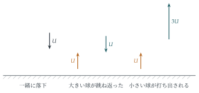

STEP II 2010、第10問
先に進む前に問題を読んでおこう。問題は STEP Support Programme の問題データベースにある： step.maths.org/questions/10-s2-q10
導入
バスケットボールの上にテニスボールを載せて持ち、両方を一緒に落としてみよう。バスケットボールが床で跳ね返ると、テニスボールは落とした高さの何倍もの高さまで飛び上がり、ときには天井に届くほどである。屋外で試してみるとよい。
この問題の小問 (i) は、1回の衝突には速さの上限があることを示す。ぶつかってくる球がどれほど重くても、静止している球を、ぶつかってくる球の速さの2倍を超える速さで送り出すことはできない。小問 (ii) は、この上限を破る方法を示す。次々に軽くなっていく球の列に運動を受け渡していけば、各段階で速さが掛け算的に増えていくのである。同じ考え方によって宇宙探査機は外惑星まで送り届けられており、また超新星（supernova）の仕組みの一部としても提案されたことがある。
取りかかる前に
第 10.1 節 より：速さ \(u\) で運動する質量 \(M\) が、静止している質量 \(m\) に弾性衝突（elastic collision）するとき、衝突後の \(m\) の速さはいくらか。
そこで得た結果（質量の役割を入れ替えたもの）から、ぶつけられた粒子の速さは \(\frac{2M}{M + m}u\) である。別の覚え方もある。弾性衝突では相対速度（relative velocity）が逆向きになる。重い球がほとんど減速しないならば、軽い球は重い球の速さより約 \(u\) だけ速く離れていかなければならず、つまり速さは約 \(2u\) となる。
順を追って解く
段階 1 速さの上限
\(M = bm\) とすると、衝突後の \(A\) の速さは \[v_A = \frac{2bm}{bm + m}\,u = \frac{2b}{b + 1}\,u.\] である。
\(\frac{2b}{b+1}\) と \(2\) の大小はどうなるか。\(b \to \infty\) とするとどうなるか。
すべての \(b\) に対して \(\frac{2b}{b + 1} = 2 - \frac{2}{b + 1} < 2\) であるから、\(B\) がどれほど重くても、\(A\) の速さはつねに \(2u\) より小さい。\(b \to \infty\) のとき速さは \(2u\) に近づく。無限に重い球は、動く壁のように \(A\) を跳ね返すことになるのである。■
段階 2 列に沿って受け渡す
小問 (ii) では、各粒子は次の粒子の \(\lambda\) 倍の重さである。列の中の各衝突について、小問 (i) から何がいえるか。
\(B_1\)（質量 \(\lambda^n m\)）は \(B_2\)（質量 \(\lambda^{n-1}m\)）に衝突する。\(B_2\) は \(B_1\) の \(\lambda\) 分の1の重さである。\(b = \lambda\) として小問 (i) を用いると、\(B_2\) は速さ \(\frac{2\lambda}{\lambda + 1}u\) で動き出す。次に \(B_2\) が \(B_3\) に衝突する。\(B_3\) もやはり \(\lambda\) 分の1の重さであり、\(B_3\) は速さ \(\bigl(\frac{2\lambda}{\lambda + 1}\bigr)^2u\) で動き出す。このような衝突を \(n\) 回繰り返し、最後に \(B_n\) が \(A\) に衝突すると、 \[v_A = \Bigl(\frac{2\lambda}{\lambda + 1}\Bigr)^nu.\] となる。（その後に \(B\) どうしが衝突しても、\(A\) をさらに押し出すことしかできない。\(A\) に前方からぶつかるものは何もないので、\(A\) を減速させることはできないのである。）
\(\frac{2\lambda}{\lambda + 1}\) は \(1\) より大きいか、小さいか。
\(\lambda > 1\) より \(2\lambda > \lambda + 1\) であるから、比 \(r = \frac{2\lambda}{\lambda + 1}\) は \(1\) を超え、\(n \to \infty\) のとき \(r^n \to \infty\) となる。よって \(n\) を十分大きくとれば、\(A\) をいくらでも速く動かすことができる。■
段階 3 20倍の速さ
\(\lambda = 4\) のとき \(r = \frac85 = 1.6\) であり、\(1.6^n > 20\) となることが必要である。底を \(10\) とする対数（logarithm）をとると \[\log_{10}1.6 = \log_{10}16 - 1 = 4\log_{10}2 - 1 \approx 0.20412, \qquad \log_{10}20 = 1 + \log_{10}2 \approx 1.30103,\] であるから、\(n > \frac{1.30103}{0.20412} \approx 6.37\) が必要である。最小値は \(n = 7\) である。（実際、\(1.6^6 \approx 16.8\)、\(1.6^7 \approx 26.8\) である。）■
振り返り
一つの結果を繰り返し用いる。小問 (i) を小問 (ii) で \(n\) 回用いることで、有界な増加が非有界な増加に変わった。
決して到達しない極限。上限 \(2u\) には近づくが決して到達しないので、正しい主張は狭義の不等式（strict inequality）である。
対数は累乗を積に変える。何段階必要かという問いは、割り算に帰着された。
背後にある数学
バスケットボールとテニスボール
二つの球を高さ \(H\) から一緒に落とし、速さ \(U = \sqrt{2gH}\) で床に達するとする。すべてが完全弾性的で、バスケットボールのほうがはるかに重いと仮定する。バスケットボールは床で跳ね返って上向きに速さ \(U\) をもち、すぐに、まだ速さ \(U\) で落下しているテニスボールと出会う。バスケットボールの座標系（frame）では、テニスボールは \(2U\) で近づき、非常に重い物体で跳ね返って \(2U\) で離れていく。地面の座標系に戻すと、これは上向きに \(2U + U = 3U\) である（図 10.2.1）。到達する高さは打ち出す速さの2乗に比例するので、テニスボールは \(9H\) まで上がる。
実際の球は完全弾性的ではない。反発係数（coefficient of restitution）を \(e\)、質量比を \(M/m\) とすると、テニスボールは速さ \(\frac{Me(2 + e) - m}{M + m}U\) で離れていく。演習問題にある STEP I 2014 Q10 では、測定された高さから逆算して質量比を求める。

スイングバイ
惑星のそばを通過する宇宙探査機は惑星に触れることはないが、重力は非常に重い物体との非常に柔らかい弾性衝突のようにはたらく。これをスイングバイ（gravitational slingshot）という。惑星の座標系では、探査機は回り込んで、到着したときと同じ速さで離れていく。惑星が速さ \(V\) で探査機に向かって動いているならば、太陽の座標系では、探査機はテニスボールとまったく同じように最大 \(2V\) の速さを得ることができる。1977年に打ち上げられた2機のボイジャー探査機は、外惑星がまれにしか起こらない配置に並んだ機会を利用して木星から土星へ（ボイジャー2号はさらに天王星と海王星へ）と進み、遭遇のたびに速さを得た。こうした重力アシストがなければ、海王星までの旅には12年ではなく約30年かかっていたであろう。エネルギーは惑星から供給され、惑星は測定できないほどわずかに減速する。
1968年、W. R. Mellen は American Journal of Physics 誌で、大きさが次第に小さくなるいくつかの球を積み重ねて作る「スーパーボール跳ね返り発射体」を紹介し、一番上の球が衝突時の速さの何倍もの速さで打ち出されうることを指摘した。天体物理学者は、これと重力崩壊型超新星との大まかな類似を指摘している。星の外層が落ち込んで、硬く高密度な中心核で跳ね返り、衝撃波（shock wave）が運動量をますます密度の低い物質へと外向きに運び、それを莫大な速さにまで加速するのである。積み重ねた球の効果の実演は、この考え方を学生に説明するのに用いられるが、実際の超新星には、跳ねる球よりはるかに多くの物理、たとえばニュートリノ（neutrino）がかかわっている。
思考のスキル
ある過程が一つの単純な段階の繰り返しであるとき、その段階を一度だけ解き、それを合成せよ。
1段階あたりの増幅率が \(2\) 未満であっても、増幅率は掛け合わされるので、多くの段階を経ると非有界になる。大学では、これが伝達行列（transfer matrix）、多段増幅器、多段式ロケット（第 10.3 節）の背後にある考え方である。連鎖全体の増幅率は、各要素の増幅率の積なのである。
次の一歩
現実の場合。STEP I 2014、第10問 に挑戦してみよう。具体的な数値と不完全な跳ね返りを扱う、積み重ねた球の問題である。
非弾性的な連鎖。STEP I 2017、第10問 に挑戦してみよう。質量が等比数列的に増えていく粒子の列に沿って衝突を伝えていく問題である。各粒子がちょうど2回の衝突にかかわるのはどのような場合か。
3個の球。完全弾性的な3個の球を、それぞれが下の球よりはるかに軽くなるように積み重ねる。一番上の球は \(7U\) で離れ、\(49H\) まで上がることを示せ。球が \(k\) 個のとき、一番上の球は \((2^k - 1)U\) で離れることを示せ。
エネルギーはどこから来るのか。小問 (ii) で、\(A\) の速さが非有界であるにもかかわらず、運動エネルギー（kinetic energy）の総和が保存されることを示せ。重い粒子たちはどうなるか。
さらに学ぶために
David Morin, Introduction to Classical Mechanics（Cambridge University Press）、第5章。積み重ねた球の問題が含まれている。
W. R. Mellen, “Superball rebound projectiles”, American Journal of Physics 36 (1968)。短くて楽しい論文である。
Gary Flandro, “Fast reconnaissance missions to the outer solar system utilizing energy derived from the gravitational field of Jupiter”, Astronautica Acta 12 (1966)。ボイジャーの「グランドツアー」を提案した論文である。